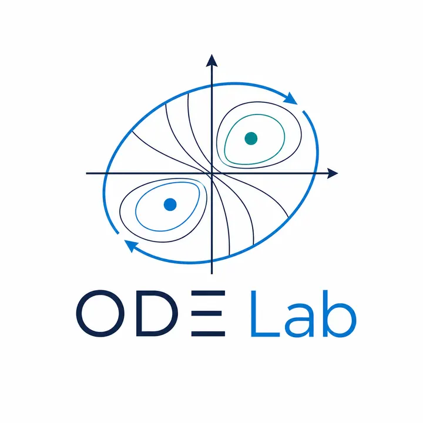

BROWSER-NATIVE • FAST • REPRODUCIBLE • OPEN
Interactive scientific modeling in the browser.
Explore and build models across ODEs, optimization, steady-state systems, stochastic simulation, symbolic analysis and agent-based emergence, with visualization and reproducible exports.


ODE LabDeterministic dynamics, trajectories, phase portraits and parameter sweeps.
Explore ODE Lab → Optimization Lab
Optimization LabConvex and non-convex search, constraints and Pareto frontier views.
Explore Optimization Lab → Steady-State Lab
Steady-State LabAlgebraic systems, equilibria, Jacobian diagnostics and continuation.
Explore Steady-State Lab → Stochastic Lab
Stochastic LabCTMC/Gillespie simulation, ensembles, mean-field overlays and randomness.
Explore Stochastic Lab → ∂Symbolic LabLaTeX equations, derivatives, Jacobians, equilibria notes and SymPy export.
Explore Symbolic Lab → ▦Agent LabIndividual-based grid models, local rules, emergent dynamics and population metrics.
Explore Agent Lab → ∞Mathematical BeautyFractals, curves, number theory and logic as public mathematical play.
Explore Math Beauty →Model Atlas
Curated, executable examples across systems biology, epidemiology, ecology, optimization, steady-state analysis and stochastic processes.

Reproducible exports
Export models, results and figures for transparent research and teaching workflows.

About the creator
Dr. Chilperic Armel Foko Kuate
Computational biologist and applied mathematician building mechanistic models and interactive tools that support education, research and discovery.
Learn more about me →